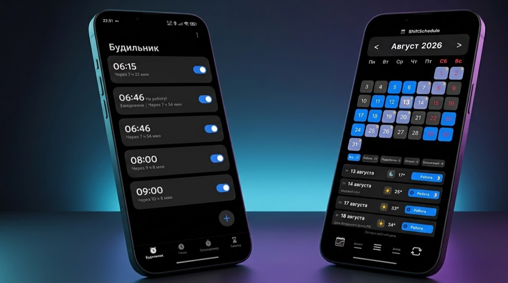
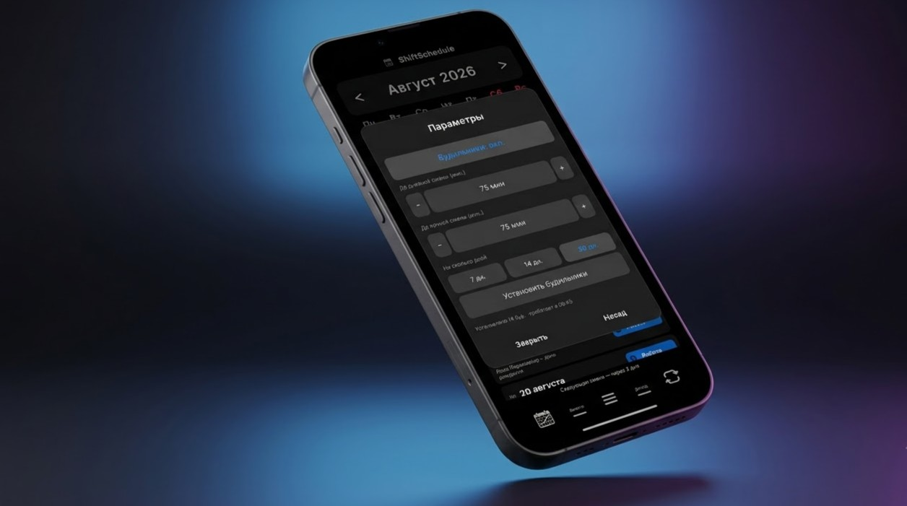

Почему обычный будильник — враг сменного графика (и как это исправить)
Как автоматический будильник, привязанный к вашему календарю смен, спасает от лишнего стресса и случайных пробуждений в выходные.
Каждый, кто работает по графику 2/2, 3/3 или «день-ночь-отсыпной-выходной», знаком с этой вечерней рутиной. Вы ложитесь спать, открываете стандартное приложение «Часы» на телефоне, судорожно вспоминаете, какая смена ждёт вас завтра, и переставляете ползунки времени.
Эта простая операция таит в себе кучу стресса. Ошиблись на час — опоздали на работу. Забыли выключить в выходной — испортили себе утро. Почему в XXI веке мы всё ещё делаем это вручную?
Устаревший подход стандартных систем
Проблема стандартных будильников в Android в том, что они спроектированы для людей с фиксированным графиком. Они мыслят днями недели: с понедельника по пятницу. Но у сменного работника вторник может быть глубоким выходным после ночной смены, а суббота — началом тяжелого рабочего цикла.

Сравнительная инфографика: хаос ручной настройки будильника на неделю против аккуратной автоматической сетки ShiftSchedule
Постоянный ручной контроль будильника создаёт фоновую тревогу. Вы можете проснуться среди ночи с мыслью: «А завёл ли я часы на утро?». Это нарушает фазы сна и мешает полноценно выспаться.
Умный будильник в ShiftSchedule: забудьте о ручной настройке
Мы создали встроенный авто-будильник, который работает в связке с вашим календарем смен. Вы настраиваете его один раз, и дальше он управляет вашим пробуждением сам.
Принцип прост: будильник привязывается к конкретному типу смены, а не к дню недели.
- Есть смена «День» в календаре? Будильник зазвонит в назначенное время.
- Наступил выходной по графику? Будильник автоматически отключится.
Ключевые возможности функции
Для максимального удобства мы добавили несколько гибких настроек:
- Раздельное время для смен. Вы можете настроить ранний подъем для утренней смены, более поздний — для вечерней, и полностью отключить звук для ночной смены, оставив только тихое напоминание о подготовке к выходу.
- Шаг настройки. Удобный ползунок с шагом в 5 минут позволяет быстро выставить нужное время упреждения (например, будить за 90 минут до начала работы).
- Автономность. Будильники создаются на 45 дней вперёд. Даже если у вас временно пропадёт интернет, телефон всё равно прозвенит вовремя.

Скриншот детальной настройки будильника для конкретного типа смены с выбором времени
Как настроить авто-будильник: короткая инструкция
Активировать умный будильник в приложении очень просто:
- Перейдите в Меню → Настройки смен → Выберите вашу смену (например, «День»).
- В самом верху карточки смены перейдите во вкладку Будильник.
- Укажите время и активируйте его.
Важное правило для разных графиков: Если вы указали будильники отдельно для смен «День» и «Ночь», приложение создаст два независимых будильника, которые будут чередоваться по вашему графику. Если же вы работаете суточным графиком (например, «сутки через двое» или «сутки через трое»), вам достаточно настроить всего один будильник на рабочие сутки.
Важные технические настройки на Android
Чтобы будильник работал как швейцарские часы и никогда не подвёл вас в ответственный момент, обратите внимание на два момента:
- Разрешение на уведомления: При первом включении будильника приложение обязательно попросит доступ к уведомлениям Android. Обязательно разрешите его — это необходимо для вывода системных предупреждений о будильниках.
- Энергосбережение (Важно!): Современные версии Android агрессивно «усыпляют» фоновые процессы для экономии батареи. Чтобы система случайно не закрыла работающий будильник, отключите режим энергосбережения/оптимизации батареи для ShiftSchedule в настройках телефона (разрешите приложению работу в фоновом режиме без ограничений). Иначе есть риск просто проспать работу.
Схема настройки разрешений и отключения режима энергосбережения для стабильной работы будильника в фоне
Больше никаких пробуждений в отпуске
Самое приятное в авто-будильнике — его интеграция с изменениями вашего графика. Если вы уходите в отпуск или заболели, достаточно просто отметить эти дни в приложении ShiftSchedule.
Функция автоматической отмены мгновенно уберёт все запланированные звонки на этот период. Вам больше не придётся просыпаться от рабочего будильника в первый день долгожданного отпуска.
Полную пошаговую инструкцию со всеми техническими нюансами, разбором настроек для разных моделей телефонов (Xiaomi, Samsung, Huawei) вы всегда можете найти в разделе инструкций на официальном сайте ShiftSchedule.
Сделайте свой сменный график комфортным для жизни. Скачайте приложение в RuStore или установите напрямую с нашего сайта и забудьте о ручной настройке будильников навсегда.